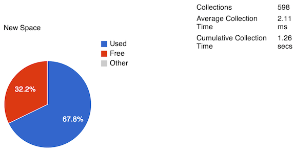
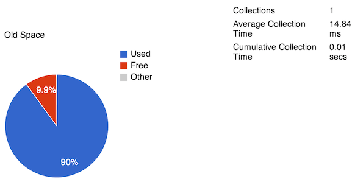
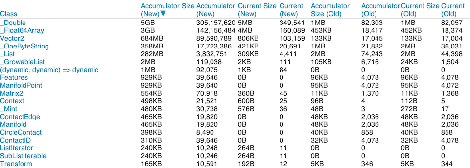

Dynamically allocated Dart objects live in a portion of memory called the heap. Typically, when an object is first allocated, it is created in the part of the heap known as new space. This area is ideally suited for objects that are smaller and short-lived, such as local variables. Garbage collection (GC) is performed frequently in new space.
Longer lived objects that survive garbage collection in new space are promoted to old space. Old space is larger than new space and is well suited for larger objects or objects that are longer lived.
Observatory’s Allocation Profile screen lets you peek at how an isolate is using memory at a given moment. This screen also provides accumulator values that you can use to study the rate of memory allocation. The accumulators are useful if you suspect that your application is leaking memory, or has other bugs relating to memory allocation.
Next to Refresh, the blue bar at the top of the Allocation Profile screen has two additional buttons:
You can use the Refresh button, at any time, to update the sample. Memory usage is volatile, and these graphs can change dramatically from sample to sample.
At the top of the Allocation Profile screen, two pie charts, along with some statistics, provide a high-level glimpse into new space and old space.
The following screenshot shows the activity in new space for a root isolate:

At the time of the sample, 67.8% of new space is used and the garbage collector has passed over new space 598 times, requiring a total of 1.26 seconds of CPU time. The following screenshot shows the activity of old space, sampled at the same moment:

The data shows that old space is 90% used. Also, garbage collection has been performed once in the same amount of time that new space has been garbage collected 598 times. An average GC cycle for new space requires 2.11 milliseconds compared to 14.84 milliseconds for a single pass over old space. Because old space is much larger than new space, it is unsurprising that garbage collection of old space requires more time.
The table below the pie charts contains detailed information about allocated objects, aggregated by class.

Note that four columns list Accumulator information and four columns list Current information.
The Accumulator columns contain information about objects since the beginning of the isolate’s execution or since the reset accumulator button was last clicked, whichever is most recent.
The Current columns contain information about objects that have survived the last garbage collection cycle as well as new objects that have been allocated since the last GC cycle. If any of the recently allocated objects have become garbage, they are still counted until the next garbage collection.
The information in the Accumulator columns is under your control— when you click the Reset Accumulator button, the accumulator columns in the table are set to 0. You can get your app to a particular state, then pause it and reset the accumulator. Resume the program, and refresh the table. You can now see if the memory allocated in that interval is what you expected.
You can affect the information in the Current columns by clicking the GC button to force a garbage collection cycle.
The columns in the table are as follows:
By default, the table is sorted by the Accumulator Size (New) column, from largest value to smallest, but you can click any column name to sort the data on that column.